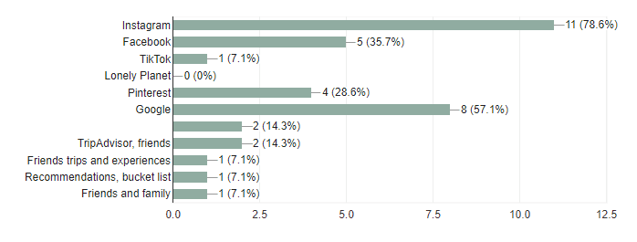

Research
User Survey:
I conducted research by using a survey sent out to users in my target group to fill out. I then went through the responses and used the relevant information to inform my decisions about the product
Which services do you use to book experiences and trips? Check all that apply.

Where do you go for travel inspiration? Check all that apply.
Question: Would you book your experiences and travel from an app such as Instagram or TikTok if you could? If yes, please explain briefly. If no, please explain briefly.
- 54% of users would book travel and excursions from a social media app
- 46% of users would not book travel and excursions from a social media app
Question: Infinite scroll is the endless feed of content that you can scroll through when using apps like Instagram, Facebook, TikTok, Pinterest, etc. Do you like the concept of infinite scroll when using your social media apps? If yes, please explain briefly. If no, please explain briefly.
- 73% of users enjoy infinite scroll UI
- 27% of users do not enjoy infinite scroll UI
Key Takeaway
- Majority of participants are comfortable booking travel on a variety of different services as long as those services are secure (i.e. exclusively for travel, careful with credit card information and personal data)
Key Takeaway
- Users reported that they use social media for travel and experience inspiration, but go to travel sites for booking - if the inspiration and booking site could be one then this would enable both inspiration and booking to occur on the same platform
Key Takeaways
- An overwhelming majority of participants get travel inspiration from social media apps
- 54% of users would book travel and excursions from a social media app if the process was user friendly and included realistic pricing/date options and security features for their data
- 46% of users would not book travel on a social media app because of the lack of data security they feel social media apps contain
Key Takeaways
- 73% of users enjoyed infinite scroll UI
- Users both definitively for and against infinite scroll in apps said that it allows for the most satisfying user experience, but feeds their app addiction and wastes time
- 18% of participants went as far to say that an app without infinite scroll would seem like it had worse UI than one that did